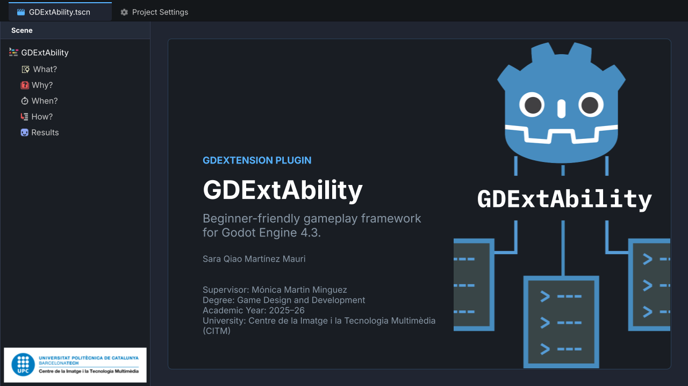
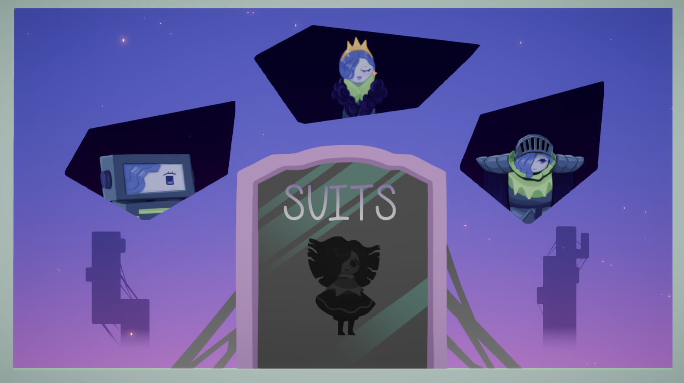
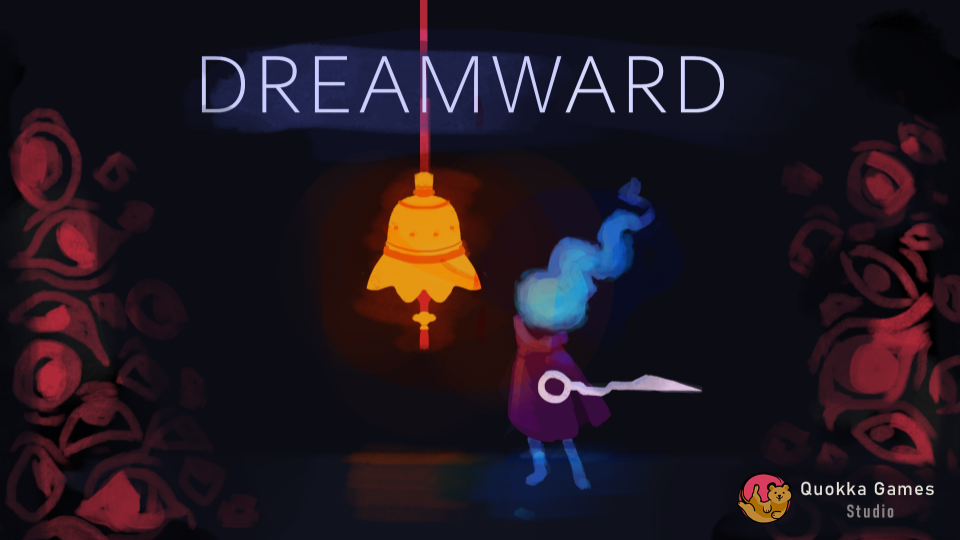
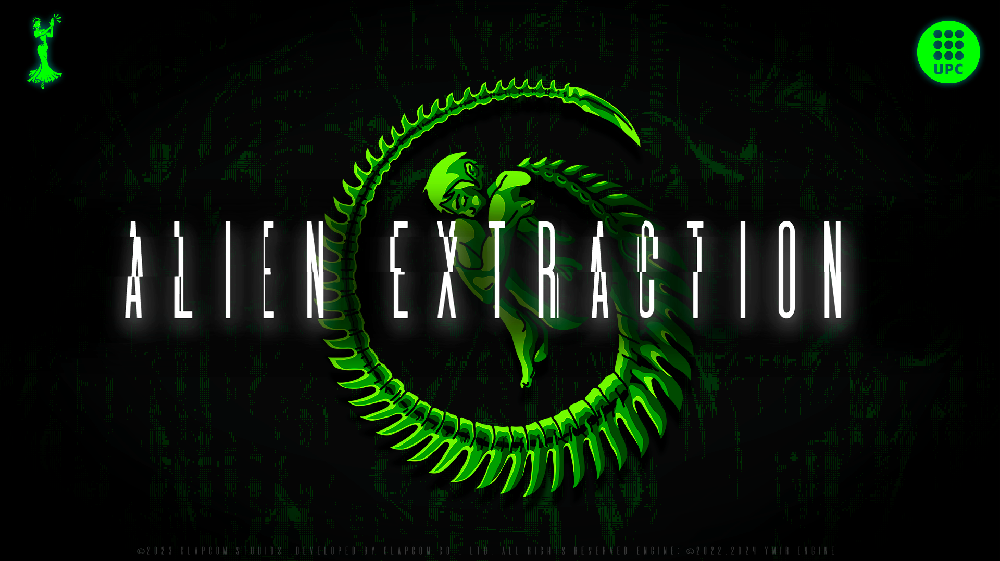
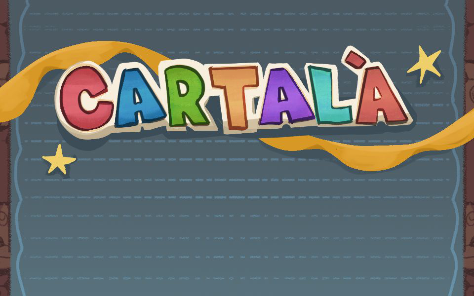
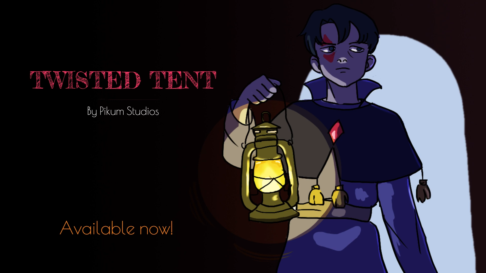
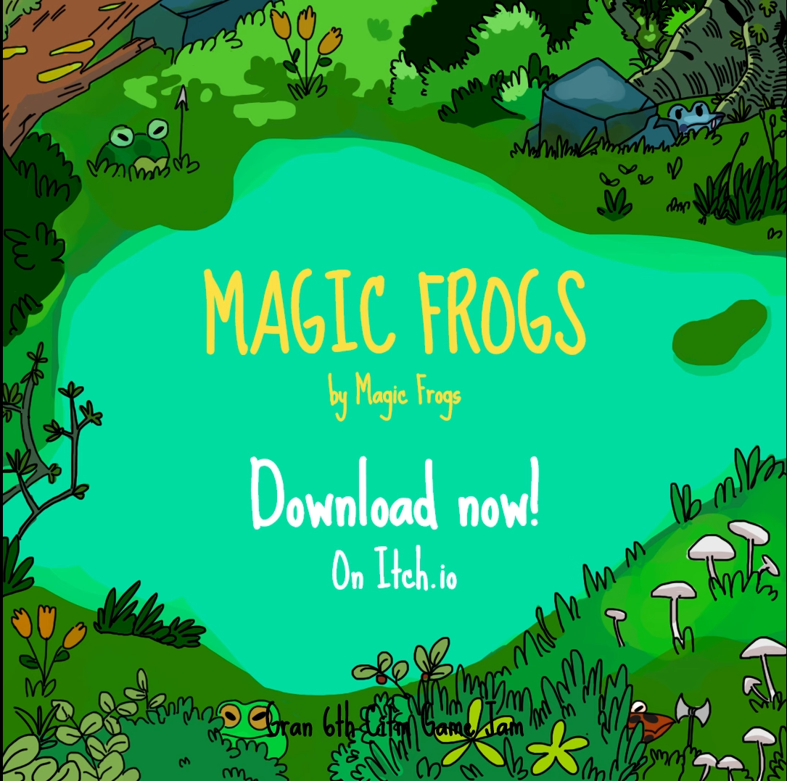
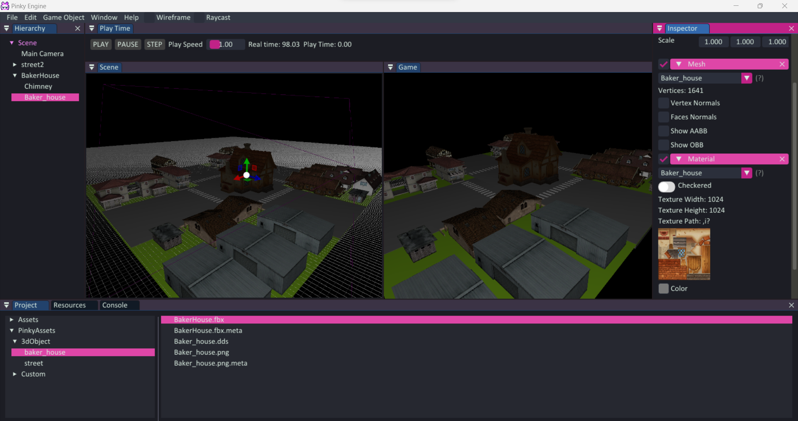
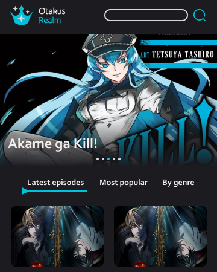
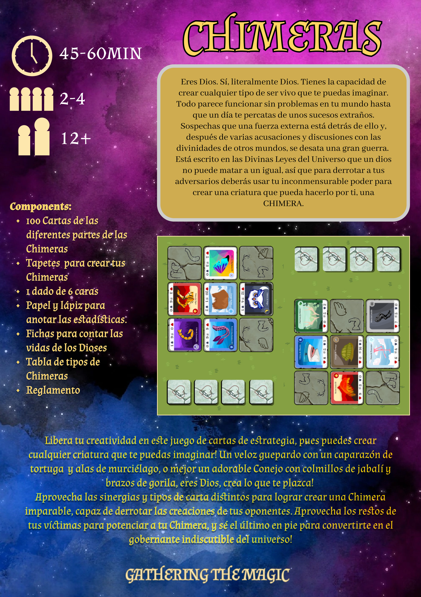

About me
I'm a gameplay and systems programmer from Spain. While my
main interest lies in programming, I also enjoy the creative
process behind game design.
I'm developing a Godot plugin that simplifies creating and managing abilities.
My goal is to create scalable, modular gameplay systems that
are intuitive to work with and adaptable to different kinds of games.
- Former Larian Studios intern
- Open to junior gameplay, engine, and tools programming roles
What I'm doing
-
C/C++ programming
Systems, gameplay and engine-level logic.
-
C#/Unity game development
Gameplay, systems and rapid prototyping.
-
Game jam all-rounder
Design, code and whatever it takes to make it work.
Portfolio
-

Featured project
GDExtAbilities — Godot GDExtension Plugin
My job: Designed and implemented modular C++ gameplay systems for abilities, attributes, effects, tags, custom editor tools, and their runtime lifecycle. Built a 2D GDScript demo and performance stress tests to validate the plugin's features.
The project: A Godot 4 GDExtension plugin inspired by Unreal Engine's Gameplay Ability System, providing a scalable, reusable foundation for gameplay-driven projects.View on GitHub
A Godot 4 GDExtension plugin inspired by Unreal Engine's Gameplay Ability System. It gives gameplay-driven projects a modular, reusable foundation for abilities, attributes, effects and tags.
- Role
- Design and implementation
- Stack
- C++ · GDScript · Godot 4 · GDExtension
- Context
- In development · 2025–2026
My contribution
- Architecture. Designed the plugin's modular C++ architecture for abilities, attributes, effects and tags, following the approach of Unreal's Gameplay Ability System. This allows individual systems, such as tags and attributes, to be used independently without requiring the entire plugin.
- Runtime. Implemented the lifecycle management of abilities and effects while the game is running.
- Editor tools. Built custom editor tools so these systems can be set up and inspected from inside Godot.
- Built-in documentation. Included documentation for every element inside the engine so it was easier and faster to access.
- Demo. Wrote a 2D GDScript demo that shows how a project uses the plugin.
- Validation. Created performance stress tests to check how the systems behave under load.
What I learned
Bringing an Unreal-style ability system to Godot meant designing a C++ API that is still pleasant to use from GDScript and the editor. Building the demo and the stress tests alongside the plugin kept me honest about both usability and performance.
-

Suits
My job: Implemented game mechanics and progression, UI art/code, accessibility features, narrative design, and parts of level and mechanics design.
The game: A 2D puzzle-platformer for the 8th Gran CITM Game Jam. Transform between shapes, solve puzzles across a rotating cube world, and uncover a narrative about identity and self-image. Includes dyslexia mode and colour-blind-friendly platforms and objects. Awarded Best Game and an honourable mention from DonesTech.A 2D puzzle-platformer where you transform into different shapes to overcome challenges. Explore a surreal cube world where each face hides new secrets, puzzles and shifting perspectives, in a story about identity and self-image.
- Role
- Gameplay, UI, narrative and accessibility
- Team
- 5 people · Quokka Games
- Context
- 8th Gran CITM Game Jam
- Recognition
- Best Game award and an honourable mention from DonesTech
My contribution
- Mechanics and progression. Implemented the core game mechanics and the progression through the levels.
- UI. Made the UI art and wrote the UI code.
- Accessibility. Implemented a dyslexia-friendly font mode and colour-blind-friendly platforms and objects.
- Design. Contributed to parts of the level design, mechanics design and all the narrative.
Technical highlight
My main challenge was managing collision detection across the cube's different faces. Since only the face the player is currently on is rendered, the correct colliders had to be enabled or disabled as the player crossed between faces, ensuring that collisions always matched what was visible on screen.
What I learned
Building accessibility features taught me how small design decisions, such as font choices and adapting platforms and objects to be distinguishable for colour-blind players, can make a big difference in how players experience a game. I also learned how important it is to be flexible and step into different roles when needed. Taking on tasks beyond my main responsibilities helped the team cover all aspects of development and bring the game together into a more polished experience.
-

Dreamward
My job: Implemented game mechanics and progression, UI art/code, and parts of boss design/code.
The game: A Unity action game made for the 7th Gran CITM Game Jam. Play as a protector of dreams, learn boss patterns, manage stamina, and fight nightmare representations of trauma. Includes three bosses and an optional one-hit challenge mode.A challenging boss rush where you play a warden protecting people's dreams. Learn each boss's patterns, manage your stamina and fight the nightmares that represent different people's trauma so they can dream again. It includes three bosses and an optional one-hit mode.
- Role
- Gameplay and UI
- Team
- 4 people
- Engine
- Unity
- Context
- 7th Gran CITM Game Jam
My contribution
- Mechanics and difficulty progression. Implemented the core game mechanics and how the difficulty increases through the game through the enemies.
- UI. Made the UI art and wrote the UI code.
- Bosses. Worked on the design and code of parts of the boss fights, whose attack patterns the player has to learn.
What I learned
This project taught me to look beyond the mechanics themselves and consider how design decisions affect the whole development process. When I suggested adding another boss to give the game more variety, I also wanted to avoid adding more work for the artist, so I came up with the idea of creating a boss using only particle effects. It was a good experience in finding creative solutions that could improve the game without putting extra pressure on the team.
-

Alien Extraction - Clapcom Studios
My job: Supported Ymir Engine development; implemented the UI module and script integration; built menus including main, HUD, death, loading, level selector, and pause menus; designed the item system; and contributed to save/load functionality and bug fixing.
The game: A four-month, 35-person custom-engine Diablo-like set in the Alien universe, with three explorable levels, abilities, equipment rarity, crafting, and a final boss. The project strengthened my collaboration, flexibility, and communication skills in a large multidisciplinary team.A Diablo-like action game set in the Alien universe. Play an elite soldier sent to an alien-infested planet: explore multi-level raids, fight the saga's enemies and manage your inventory to survive. Built by Clapcom Studios on the team's own engine, Ymir Engine.
- Role
- Code member
- Team
- 35 people · Clapcom Studios
- Engine
- Ymir Engine (made by the team)
- Context
- 4 months
My contribution
- Ymir Engine. Supported the development of the engine and worked on its UI theme.
- UI module. Implemented the engine's UI module with all the elements and functionality needed to link them to scripts.
- Game menus. Built the main menu, HUD, death menu, loading scene, level selector and pause menu, plus support on other menus.
- Items and saving. Designed and implemented the system that manages the player's items, and the game's save and load.
- Bug fixing. Tracked down and fixed bugs and glitches to keep the game working.
Technical highlight
One of the main challenges was developing a game using an in-house engine built by the team. Early milestones were affected by engine-related issues, including memory leaks, the implementation of new modules and performance optimisation. On top of that, working with custom-made tools that hadn't been thoroughly tested made development more challenging, as they lacked many of the quality-of-life features and workflows you'd normally expect from a more established engine like Unity.
What I learned
Working with a large, diverse team taught me patience, flexibility and open communication. It improved my conflict-resolution and teamwork skills when everyone is aiming for a shared goal. As a team we also learned that every engine has its limits and that deciding what to cut is part of the work.
-

Cartalà
My job: Game mechanics and game progression coding and game design (partially).
The game: Submission for the Premis Ludi 2024. The goal of the event was to create a video game prototype that highlights the richness and utility of the Catalan language in a fun and engaging way. Our project is a card-based, rogue-like game where you play with the syntax. Your mission, as a player, is to learn about the different grammatical categories and how to use them effectively to create complex sentences and score points.A card-based, rogue-like game where you play with syntax. As the player, you learn the different grammatical categories and use them to build complex sentences and score points. Made for Premis Ludi 2024 to show the richness and usefulness of the Catalan language in a fun way.
- Role
- Gameplay programming and part of the design
- Context
- Premis Ludi 2024
- Genre
- Educational card-based rogue-like
My contribution
- Mechanics. Coded the game mechanics.
- Progression. Coded the game progression.
- Design. Contributed to part of the game design.
What I learned
I learned how challenging it can be to make language learning feel like playing an actual game rather than doing exercises with game-like rewards. It made me think more about how educational goals can be integrated into the mechanics themselves. I also gained experience building flexible systems, particularly with the combo calculation, which needed to handle different grammatical combinations without having to hardcode every possible outcome.
-

Twisted Tent
My job: Implemented combat-system and UI code; contributed to code, design, and UI work with Pikum Studios.
The game: A tactical RPG set in a mysterious circus, with two dungeons, eight-plus enemy types, four party members, turn-based abilities, inventory/equipment, puzzles, a shop, a forge, buffs, and debuffs.A turn-based RPG set in the Twisted Tent circus. In a dystopian Russia, a protagonist tired of life takes a job at a circus that is not what it seems: explore two dungeons, solve puzzles, make allies and reach the Showman.
- Role
- Code, design and UI
- Team
- 9 people · Pikum Studios
- Engine
- Custom engine
- Context
- Turn-based RPG · Project II
My contribution
- Combat system. Wrote code for the turn-based combat system, which supports multiple abilities, buffs and debuffs.
- Dialogue system. Implemented the dialogue system, allowing conversations to include different player choices and user input.
- UI. Wrote UI code and worked on the game's UI.
- Design. Contributed to the game design alongside my coding work.
What I learned
Working on the combat system taught me the importance of keeping code organised as a project grows. As more mechanics were added, the system became increasingly difficult to work with, so I suggested and helped with a refactor. This made it easier to build on existing mechanics and add new ones without relying on workarounds or making the code harder to maintain.
-

Magic Frogs
My job: Implemented game mechanics and UI code.
The game: A Windows Unity prototype made for the 6th Gran CITM Game Jam. Counter enemy attacks with a frog's croak and survive waves of flies in a 2D top-down action game.A 2D top-down action prototype: counter your enemies' attacks with the power of your croaks and survive the oppressive flies.
- Role
- Gameplay and UI
- Engine
- Unity
- Context
- 6th Gran CITM Game Jam
- Platform
- Windows
My contribution
- Mechanics. Implemented the core game mechanics.
- Item spawning. Developed a random spawning system for items such as shields and health pickups.
- UI. Implemented the UI interactions and functionality.
What I learned
This was my first game jam and my first time working with Unity. Despite the game's simple scope, seeing people enjoy playing it so much was one of my biggest takeaways from the experience. We wanted to create a challenging game, but one that rewarded skill rather than relying on unfair difficulty. It taught me that a simple idea, when executed well, can still make for a really enjoyable experience.
-

Pinky Engine
3D Game engine made from scratch in C++ using SDL and OpenGL for graphics, plus ImGui for the UI. Moreover, it presents a UI implementation and a custom theme for the application.
A 3D game engine built from scratch in C++ with SDL and OpenGL, using ImGui for the editor UI. Made with Andreu Nosàs Soler for the 3D Engines subject in the third year of the Game Design and Development degree at CITM (UPC), Terrassa.
- Role
- Engine core systems and UI system
- Team
- 2 people
- Stack
- C++ · SDL · OpenGL · ImGui · JSON (parson)
- Context
- University project · MIT licence
My contribution
- GameObjects and components system. Designed and implemented the GameObject system and its component architecture, including the Mesh and Material components.
- Resource manager. Developed a resource management system that loads resources once, reuses existing instances and releases them when no longer used.
- Custom file format. Implemented the importing and loading of 3D models and textures into the engine's own resource format.
- Scene serialization. Saves and loads the scene structure as JSON, also used to handle the Play and Stop functionality.
- Engine windows. Built the editor windows with ImGui.
- UI system. Designed the UI component pattern and, with my teammate, the UI components: Canvas, Image, Text, Button, Input Box and Checkbox.
Technical highlight
Pressing Play saves a temporary copy of the scene and Stop loads it back, so changes made while playing are discarded, as in Unity. Together with the resource manager, which keeps one copy of each resource in memory and deletes it when nothing uses it, this keeps the editor's memory use low.
What I learned
Building an engine from scratch taught me a lot about software architecture and the importance of understanding how systems work together. I had to revisit and rewrite parts of my own implementation, especially the resource manager, several times before finding an approach that worked properly. It also taught me not to get too attached to my code: sometimes starting over is the best way forward. Working so closely with my teammate was equally important, as constantly discussing ideas, reviewing each other's work and helping each other solve problems made the whole process much smoother.
-

Otaku's Realm - Flutter App
The app features a self-designed Anime section with partially functional elements, showcasing my skills in custom UI/UX design and Flutter development.
A Flutter mobile app for anime and manga fans, designed in Figma and built as a team project. I designed and built the Anime section; the manga, user and character-ranking screens were done by a teammate.
- Role
- UI/UX design and Flutter development of the Anime screens
- Team
- Team project
- Stack
- Flutter · Dart · Figma
- Context
- Partially functional prototype
My contribution
- Anime main page. A carousel and a list of recent animes that open each anime's page, plus a search bar that suggests searches.
- Anime info page. A trailer video player, collapsing header sections and the full episode list.
- Design. Created a semi-interactive Figma prototype of the Anime screens before building them.
What I learned
Designing the screens in Figma first showed me how much of an app's behaviour, such as what each tap opens and which sections collapse, has to be decided in the prototype before it is built in Flutter.
-

Chimeras (prototype)
My job: Game mechanics, narrative, prototype design.
The game: Chimeras is a deck-building board game for up to 4 players, where each player embodies a god. Players create unique creatures using their decks to battle against other divinities. By strategically combining elements, players can unlock synergies that grant special passive skills.A deck-building board game for up to 4 players, where each player embodies a god. Players build unique creatures from their decks to battle other divinities, and combining elements unlocks synergies that grant special passive skills.
- Role
- Mechanics, narrative and prototype design
- Players
- Up to 4
- Context
- Board-game prototype
My contribution
- Mechanics. Designed the game mechanics, including how creatures are built from decks and how element synergies work.
- Narrative. Wrote the narrative framing of gods as players.
- Board and prototype design. Designed the initial board layout and the game's prototype.
What I learned
This project helped me become more confident in developing and sharing my ideas, even when I wasn't sure whether they were good enough. Starting with the core concept and initial mechanics, I got to see how the rest of the team expanded and improved the synergy system. It made me appreciate how different perspectives can take a design further than initially planned, and how much I enjoy experimenting with mechanics and exploring different gameplay ideas.
Outside of Development
When I'm not coding, you'll likely find me playing games like Dark Souls or Baldur's Gate 3. One of the things I enjoy most in those games is discovering little details such as hidden NPCs interactions. I believe these little touches make a huge difference in player experience, and they inspire the kind of attention to detail I aim to bring to my own projects. Outside of gaming, I'm also passionate about cooking and experimenting with new recipes.